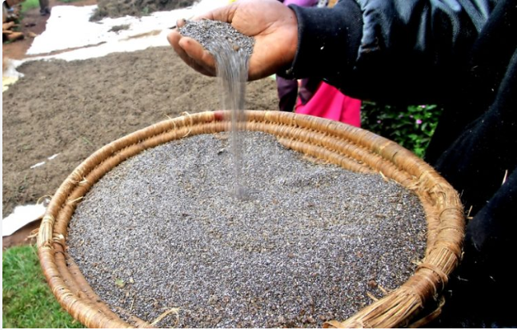

MBEGU ZA CHIA
Mbegu za chia ni moja wapo ya vyakula vyenye kiwango kikubwa cha virutubisho. Zina virutubisho mbali mbali ambavyo ni muhimu kwa afya ya mwili na ubongo
a.Omega-3
b.Vitamini
c.Protini
d.Calcium
e.Manganese
f.Magnesium
g.Phosphorous
Pia mbegu hizi zina Vitamini A, B, C, D, E, na kemikali za kulinda mwili(Anti-oxidants)
Faida za mbegu za chia katika afya ya mwili wa binadamu
- Kulainisha ngozi na kupunguza dalili za uzee,Ndani ya mbegu hizi kuna kemikali zinazo saidia kupunguza makali ua radikali huru(free radicals) zinazotengenezwa katik mwili yetu na kuleta na matatizo mbalimbali kwenye ngozi
- Pia husaidia katika Mfumo wa kumeng'enya chakula
- Husaidia katika Afya ya moyo, Mbegu za chia zinasaidia mwili kubalance kiwango cha lehemy(cholesterol) na kupunguza hatari ya mtu kupata tatizo la mishipa ya damu kuwa juu, Hivyo mbegu hiziz ni muhimu katika kuimarisha afya ya myoy na kuondoa hatari ya kupata tatizo la mishipa ya damu kuwa juu.
- Husaidia katika afya ya ubongo, Chia seeds zinakiwango kikbwa cha Omega-3 na Omega-6 fatty acid ambazo ni muimu sana katika kusaidia ubongo kutengeneza cell zake. Virutubisho hivi ni muhimu sana kwa watooto, Chia ni mmea pekee wenye virutubisho hivi.
- Husaidia katika kuimarisha mifupa, Kama tulivoona mbegu hiziz ndani yake kuna kiwango kikubwa cha madini la calcium hivyo husaidia kuimarisha mifupa. Pia huwasaidia sana watoto wasipate ugonjwa wakuwa na matege.
- Afya ya meno, Kutokana na kuwa na kiwango kikubwa cha madini ya calcium, Phosphorous na Vitamini A na Zinc mbegu hizi zinasaidia kuimarisha afya ya meno pia.
- Katika ujauzito mbegu hizi za chia zinasadia kumpatia mama virurtubisho muhimu vinavyohitajika katika kipindi cha uajuzito na muhimu katika ukuaji wa mtotot Mfano Omega-3
- Chia Lobo 10000Tsh/=
- Chia Nusu 20000Tsh/=
- Pilau masala 3000Tsh/=
- Pilipili ya Mbilimbi 3000Tsh/=
- Produced & Packed by Tumaini Honey's
- Mob: +255 0756165782
- Mob: +255 0713075101
- P.O.BOX 77 Mkwajuni Songwe
- tumainikutemile@gmail.com
- Mbeya Tanzania
JINSI YA KUTUMIA MBEGU HIZI
1.Inafaa kuchanganywa kwenye uji, Maziwa, juice, maziwa mgando, kwenye mboga za majani pia
2.Unaweza nyunyiza juu ya chakula chako wakati wa kula kama wali, supu, n.k
3.Kama unazitumia kwa lengo la kupunguza uzito Asubuhi kabla ya kula chochocte weka vijiko viwili vy chakula kwenye kikombe weka maji ya moto ukipenda kamulia limao. Kunywa mchanganyiko huo itakupa nguvu na kukushibisha kunywa chai yako baada ya nusus saa au zaidi vivyo hivyo katika chakula cha mchana
4.KWA WATOTO unaweza mchanganyia mtoto kwenye juice, uji, maziwa n.k pia unaweza kuzisaga mbegu hiziz pamoja na viungo vingine vya unga wa lishe au ulezi
Mbegu hziz zinapatiaka katika tovuti yetu hapa chini unaweza ukaziona pia ukatuma maombi yako ya uhitaji wa mbegu hiziz ni nafuu sana karibuni sana


Bei zetu ni kama ifuatavyo
KWA MAWASILIANO WASILIANA NASI KWA NAMBA ZIFUATAZO